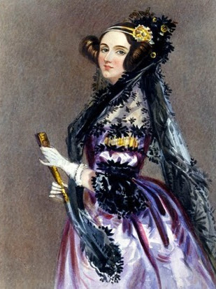

The First Computer Programmer and 19th Century Mathematician

Ada, Countess of LoveLace, 1840.
Here's a time line of Ada LoveLace's Life:
1815 - Born in London, England
1824 - At age 12, Ada designs a steam-powered flying machine
1829 - Ada battles with a variety of illnesses during her childhood, from blinding headaches to a paralyzing bout of measles. She is bedridden for almost a year.
1833 - Ada meets mathematician Charles Babbage. It's a friendship that would change the course of both their lives.
1835 - Ada marries William King, an english aristocrat.
1836 - Ada bears a son named Byron King-Noel, named after her father.
1837 - Charles Babbage begins to conceptualize the Analytical Engine - a predecessor to the modern computer. It had an arithmetical unit, conditional branching loops and integrated memory. Babbage even designed a printer for his Analytical Machine. Ada works with Babbage on the engine through the next few years.
1837 - Ada's second child, a daughter, is born.
1838 - Ada's husband, William King, becomes the Earl of Lovelace, giving Ada the title of "The Right Honourable the Countess of Lovelace." Ada goes down in history as Ada Lovelace.
1839 - Ada gives birth to a second son named Ralph Gordan.
1842 - Italian mathematician Luigi Menabrea publishes his paper on Babbage's lecture on the Analytical Engine. Lovelace translates and expands the article, adding notes from her personal knowledge about the engine.
1843 - Ada completes her work on the Menabrea Paper. In one section, she describes an algorithm for the Analytical Engine to compute Bernoulli Numbers. For this, we recognize Ada as the first computer programmer. She was the first person to publish an in-depth set of instructions that a computing device could use to reach a result that had not been previously calculated.
1851 - Ada attempts to create a mathematical model for success in placing large bets. The plan fails and she falls into deep debt. Throughout this period of her life she is followed by rumors of extramarital affairs.
1852 - Ada dies from uterine cancer when she is 36, the same age as her father when he passed away.